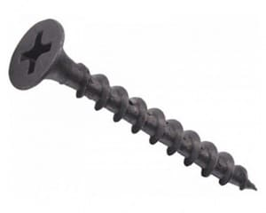

Саморез-шуруп CF для гипсокартона по дереву
Стандарт
DIN 95
Цена от
0,22 ₽
Размерный ряд
— оптимально подходит для работы с древесиной, предотвращает расщепление волокон;
Саморезы и шурупы » CF Саморезы-шурупы для крепления гипсокартона по дереву (гипрок-дерево)
Варианты и размеры (14)
| Наименование | Размер | Длина, мм | Материал | Покрытие | Цена |
|---|---|---|---|---|---|
| Саморез-шуруп CF для гипсокартона по дереву L=100мм | 100 | 0,43 ₽ | |||
| Саморез-шуруп CF для гипсокартона по дереву L=110мм | 110 | 0,46 ₽ | |||
| Саморез-шуруп CF для гипсокартона по дереву L=120мм | 120 | 0,48 ₽ | |||
| Саморез-шуруп CF для гипсокартона по дереву L=140мм | 140 | 0,54 ₽ | |||
| Саморез-шуруп CF для гипсокартона по дереву L=19мм | 19 | 0,21 ₽ | |||
| Саморез-шуруп CF для гипсокартона по дереву L=25мм | 25 | 0,22 ₽ | |||
| Саморез-шуруп CF для гипсокартона по дереву L=32мм | 32 | 0,24 ₽ | |||
| Саморез-шуруп CF для гипсокартона по дереву L=41мм | 41 | 0,27 ₽ | |||
| Саморез-шуруп CF для гипсокартона по дереву L=45мм | 45 | 0,28 ₽ | |||
| Саморез-шуруп CF для гипсокартона по дереву L=51мм | 51 | 0,29 ₽ | |||
| Саморез-шуруп CF для гипсокартона по дереву L=55мм | 55 | 0,31 ₽ | |||
| Саморез-шуруп CF для гипсокартона по дереву L=65мм | 65 | 0,33 ₽ | |||
| Саморез-шуруп CF для гипсокартона по дереву L=75мм | 75 | 0,36 ₽ | |||
| Саморез-шуруп CF для гипсокартона по дереву L=90мм | 90 | 0,40 ₽ |